EcoLact / Flujos de negocio
Flujo de producción
De la materia prima al producto terminado
La planta planifica productos con recetas vigentes, comprueba sus insumos y registra lo realmente obtenido. El inventario cambia en dos momentos distintos: al iniciar y al finalizar el lote.
Administrador
Configura productos y recetas.
Encargado de planta
Planifica, inicia y finaliza los lotes.
Inventario
Conserva consumos y productos obtenidos.
Así funciona el proceso

Ampliar diagrama · Descargar fuente Mermaid

Ver la fuente editable del diagrama
flowchart TB
A([Inicio · Planta]) --> B[Consultar leche e insumos disponibles]
B --> C[Seleccionar productos y cantidades]
C --> D[Obtener recetas y calcular requerimientos]
D --> E{¿Recetas válidas y stock suficiente?}
E -->|No| F[Impedir inicio y mostrar faltantes]
F --> C
E -->|Sí| G[Iniciar lote EN_PROCESO]
G --> H[Descontar leche e insumos]
H --> I[Elaborar productos]
I --> J[Registrar cantidades reales y merma]
J --> K{¿Datos de todos los productos válidos?}
K -->|No| J
K -->|Sí| L[Finalizar lote]
L --> M[Ingresar productos realmente obtenidos]
M --> N[Estado FINALIZADO]
N --> Z([Fin · Stock disponible para ventas])
classDef default fill:#eaf3ff,stroke:#7ca5df,color:#123d91,rx:7,ry:7;
classDef decision fill:#fff3df,stroke:#dca34d,color:#754c0c;
classDef terminal fill:#e6f7ed,stroke:#72b692,color:#145d3b;
class E,K decision;
class A,Z terminal;
Paso a paso
- Consultar la leche ingresada desde Acopio y el stock de los demás insumos.
- Seleccionar productos y cantidades previstas. EcoLact obtiene sus recetas y calcula los requerimientos.
- Verificar recetas y stock. Al iniciar vuelve a calcular y bloquea los insumos para comprobar sus existencias; si faltan, impide crear el lote.
- Crear el lote EN_PROCESO, guardar la receta y versión utilizadas y descontar insumos con CONSUMO_PRODUCCION.
- Registrar la cantidad real obtenida de cada producto, incluida cero si corresponde. La diferencia respecto de lo planificado permite registrar la merma.
- Finalizar el lote. Por cada cantidad obtenida positiva, registrar INGRESO_PRODUCCION y dejar el lote FINALIZADO.
EN_PROCESO
El lote ya consumió los insumos necesarios. Todavía no añade productos terminados al stock.
FINALIZADO
Registra el resultado real e incorpora únicamente las cantidades obtenidas mayores que cero.
Trazabilidad
El lote conserva productos, cantidades previstas y obtenidas, consumos y versión de receta.
Controles del cierre
Solo se finaliza un lote EN_PROCESO y con productos planificados. Hay que indicar cantidades numéricas no negativas para todos sus productos. El servidor bloquea el lote durante el cierre para impedir que dos confirmaciones ingresen dos veces los mismos productos.
Si la hora de cierre enviada por el teléfono precede al inicio, se utiliza la hora de inicio. El cierre no vuelve a descontar insumos. Una falla dentro de la transacción revierte los cambios de esa operación.
La leche ya está disponible desde Acopio. La producción no espera obligatoriamente una aprobación de calidad por cada entrega. Las compras reponen los demás insumos; la leche no se incorpora por el formulario de compra de insumos.
Resultado del proceso
Lote finalizado, consumo trazable y productos terminados disponibles para la venta. El stock refleja lo obtenido, no una suposición basada en lo planificado.
Trazabilidad con el código revisado
Revisión documental: 28 de octubre de 2026. Las rutas siguientes identifican las fuentes locales; no implican haber ejecutado el sistema de negocio.
EcoLactWeb/app/Application/Produccion/CalcularRequerimientosProduccion.phpEcoLactWeb/app/Application/Produccion/IniciarProduccion.phpEcoLactWeb/app/Application/Produccion/FinalizarProduccion.phpEcoLactWeb/app/Application/Produccion/RegistrarIngresoLecheDesdeEntrega.phpEcoLactWeb/routes/web.phpyEcoLactWeb/routes/api.php